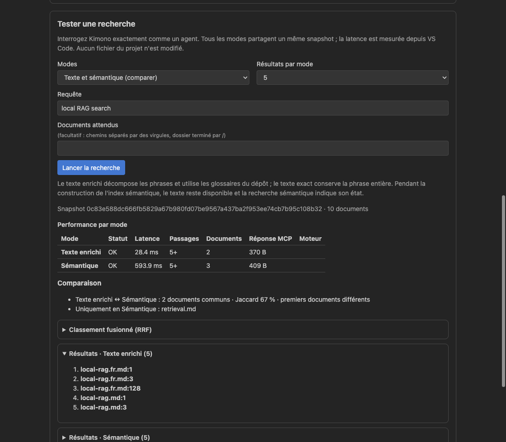

Une question sur un projet peut traverser le code, la documentation et plusieurs dépôts imbriqués. Quand un assistant délègue ces vérifications, chaque agent doit chercher dans le même état du projet. Le serveur Kimono RAG MCP 0.9.9 améliore cette couche de recherche : il permet à un orchestrateur de partager un snapshot, mais ne crée ni ne coordonne les agents.
Poser la question, puis répartir le travail
Dans un chat compatible MCP, demandez une recherche concrète. Si l'assistant sait déléguer, précisez que les recherches doivent utiliser le même snapshot Kimono RAG MCP :
Retrouve où les requêtes sont analysées dans ce projet et ses dépôts Git. Compare l'implémentation à la documentation. Fige un seul snapshot Kimono RAG MCP pour la tâche et partage son snapshotId avec les agents code et documentation. Réutilise-le pour toutes les recherches et lectures, sans nouveau freeze par agent ou par recherche. Commence par les chemins pertinents, puis ne lis que les passages nécessaires. Termine le snapshot partagé par un seul end, quand tous les agents ont fini.Un freeze pour le swarm, pas un par recherche
L'orchestrateur appelle begin une seule fois pour figer le corpus utile, puis transmet le snapshotId obtenu aux agents délégués. L'agent code peut enchaîner plusieurs recherches et lire des fonctions ciblées pendant que l'agent documentation vérifie les règles écrites sur ce même snapshot. Chaque appel à aikido_search et aikido_file reprend l'identifiant partagé : ni une nouvelle question ni un nouvel agent ne nécessite son propre freeze.
L'optimisation consiste à mutualiser la préparation : un seul corpus capturé au lieu de captures distinctes par recherche ou par agent, moins d'appels de cycle de vie, et un état du projet commun pour confronter les résultats. Chaque agent ne récupère que ses passages utiles ; partager le snapshot ne signifie pas envoyer tout le corpus à chaque modèle. Les requêtes indépendantes peuvent aussi être regroupées dans un appel de recherche, et les plages de fichiers dans un appel de lecture. Le guide Kimono RAG MCP MCP retrieval reference décrit ces opérations.
Quand toutes les recherches et lectures déléguées sont terminées, l'orchestrateur appelle end une seule fois pour le snapshot partagé. Chaque agent ne le libère pas après sa propre recherche. Le déroulement est donc un freeze → plusieurs agents, recherches et lectures → un end, et non un cycle freeze/recherche/lecture/end complet répété pour chaque recherche.
En 0.9.9, la portée prompt par défaut peut aussi réutiliser un snapshot actif lors d'un nouvel appel à begin, pour le même utilisateur, owner et chemins tant que le corpus ne change pas. Transmettre explicitement l'identifiant existant maintient le travail délégué sur l'état capturé, même si les sources évoluent entre-temps. session conserve une vue pendant la session du serveur ; call la ferme immédiatement à l'appel de end. Pour examiner les modifications, démarrez une nouvelle capture ; fresh: true en force une.
L'appel à end libère un snapshot ; ceux qui sont libérés ferment après 120 secondes d'inactivité. La durée glissante d'un snapshot est limitée à une heure. À la limite par défaut de huit snapshots actifs ou à la limite en octets, Kimono RAG MCP retire d'abord les snapshots libérés.

Langages et découpage syntaxique du code
La version 0.9.9 met à niveau Tree-sitter de 0.25.10 à 0.27.2. Le registre rassemble 24 grammaires officielles et 169 crates Tree-sitter tierces compatibles, couvrant 174 langues supplémentaires. Quatre grammaires sous licences GPL/LGPL sont exclues du binaire MIT. Le registre Tree-sitter versionné tree-sitter-grammars.json donne la liste complète des crates compatibles.
Au lieu de découper chaque fichier source après un nombre arbitraire de lignes, Kimono RAG MCP peut le séparer selon les définitions de sa syntaxe. Il reconnaît aussi les clés JSON de premier niveau et les blocs JSDoc @typedef, @callback et @interface. La recherche reçoit ainsi des passages de code plus petits, qui conservent leur structure.
Les 24 grammaires officielles
- Agda
- Bash / Shell
- C
- C#
- C++
- CSS
- ERB / EJS
- Go
- Haskell
- HTML
- Java
- JavaScript / JSX
- JSDoc
- JSON / JSONC
- Julia
- OCaml
- PHP
- Python
- Regex
- Ruby
- Rust
- Scala
- TypeScript / TSX
- Verilog
Quels fichiers sont indexés ?
Un parseur de code n’est pas nécessaire pour indexer un fichier. Dans les dossiers sélectionnés et pour les extensions configurées, les fichiers lisibles en texte restent indexés même sans parseur syntaxique : ils bénéficient du découpage textuel standard, plutôt que du découpage selon la syntaxe du code.
Les fichiers dont le contenu ne peut pas être indexé, notamment les fichiers non textuels, restent représentés par leurs métadonnées : nom, chemin, extension, taille et date de modification. On peut ainsi retrouver leur présence sans indexer leur contenu binaire. Les règles d’exclusion et les limites de taille configurées restent applicables.
Toutes les extensions de fichiers des grammaires officielles
- Agda —
.agda - Bash / Shell —
.sh,.bash,.zsh,.ksh - C —
.c,.h - C# —
.cs,.csx - C++ —
.cc,.cpp,.cxx,.c++,.hpp,.hh,.hxx,.inl,.ipp - CSS —
.css - ERB / EJS —
.erb,.ejs - Go —
.go - Haskell —
.hs,.lhs - HTML —
.html,.htm - Java —
.java - JavaScript / JSX —
.js,.jsx,.mjs,.cjs - JSON / JSONC —
.json,.jsonc - Julia —
.jl - OCaml —
.ml,.mli - PHP —
.php,.phtml - Python —
.py,.pyi,.pyw - Ruby —
.rb,.rake,.gemspec - Rust —
.rs - Scala —
.scala,.sc,.sbt - TypeScript / TSX —
.ts,.mts,.cts,.tsx - Verilog / SystemVerilog —
.v,.vh,.sv,.svh
174 langages de code compatibles, de A à Z
Kimono RAG MCP s’appuie sur la structure de votre code pour retrouver les passages utiles sans couper les définitions. Retrouvez votre langage dans la liste alphabétique ci-dessous, avec les extensions de fichiers qui permettent de le reconnaître.
A–C
- Actions †
- Ada —
.adb,.ads - ADL —
.adl - Applesoft BASIC †
- Arduino —
.ino - ArkTS —
.ets - Assembly —
.asm,.s - Astro —
.astro - Batch / CMD —
.bat,.cmd - Bicep —
.bicep - BLK —
.blk - BPF C †
- BSL / OneScript —
.bsl,.os - C comments code split †
- C preprocessor code split †
- CFEngine —
.cf - CFML —
.cfm,.cfml - CFQuery †
- CFScript —
.cfc - Clingo —
.lp - Clojure / ClojureScript / EDN —
.clj,.cljs,.cljc,.edn - CMake —
.cmake - CodeQL —
.ql,.qll - CodeQL database schema —
.dbscheme - Comments †
- Common Lisp —
.lisp,.cl - Crystal —
.cr - CUDA —
.cu,.cuh - Cypher —
.cypher
D–G
- D —
.d - D2 —
.d2 - Dafny —
.dfy - Dart —
.dart - Dart (Orchard) †
- daScript —
.das - Device Tree —
.dts,.dtsi - Diff / Patch —
.diff,.patch - DM / BYOND —
.dm,.dme - Dockerfile / Containerfile —
.dockerfile,.containerfile - DSHL —
.dshl - DTD —
.dtd - Elixir —
.ex,.exs - Elm —
.elm - Emacs Lisp —
.el - EPICS database †
- Erlang —
.erl,.hrl - F# —
.fs,.fsx - F# signatures —
.fsi - FlatBuffers —
.fbs - Fluent Bit †
- Fortran —
.f,.f90,.f95,.f03,.f08,.for - GDScript —
.gd - Git commit †
- GitHub Actions expressions †
- Gleam —
.gleam - GLSL —
.glsl,.vert,.frag - Go (alternative parser) †
- Go modules —
.mod - Go sums —
.sum - Godot resources —
.tscn,.tres - Godot shaders —
.gdshader - GraphQL —
.graphql,.gql - Groovy / Gradle —
.groovy,.gvy,.gradle - Grug —
.grug - GW-BASIC —
.bas
H–L
- Harn —
.harn - HCL / Terraform / Nomad —
.hcl,.tf,.tfvars,.nomad - HEEx —
.heex - HLSL —
.hlsl - Hygen templates †
- IEC Structured Text —
.st - INI —
.ini,.cfg - Ink —
.ink - Integer BASIC †
- iRules —
.irul - Java (Orchard) †
- Javadoc †
- Jinja dialects †
- Jinja2 —
.jinja,.jinja2,.j2 - JSON5 —
.json5 - Jsonnet —
.jsonnet,.libsonnet - Kconfig †
- KDL —
.kdl - Kotlin —
.kt,.kts - LAMMPS †
- LLVM IR —
.ll - LOLCODE —
.lol - Lua —
.lua - Luau —
.luau
M–O
- Mage †
- Make —
.mk,.make - Markdown —
.md,.markdown - MATLAB †
- MDN †
- Merlin 6502 †
- Mermaid —
.mmd,.mermaid - Microsoft BASIC 2 †
- MLIR —
.mlir - Mozilla C++ code split †
- Mozilla JavaScript code split †
- Mutt configuration †
- NetLinx —
.axs,.axi - Newick —
.nwk,.newick - Nginx †
- Nickel —
.ncl - Nim —
.nim,.nims - Nix —
.nix - Objective-C / Objective-C++ —
.m,.mm - ObjectScript UDL —
.cls - OCamllex —
.mll - Odin —
.odin - OpenSCAD —
.scad - OWL Manchester syntax —
.omn
P–R
- Pact —
.pact - Pascal —
.pas,.dpr,.lpr - PL/pgSQL †
- PostgreSQL —
.pgsql - PowerShell —
.ps1,.psm1,.psd1 - Printf formats †
- Prisma —
.prisma - Prolog —
.pro,.prolog - Properties —
.properties - Protocol Buffers —
.proto - Puppet —
.pp - Python (Orchard) †
- QBasic †
- QML —
.qml - Quirrel —
.nut - R —
.r - Racket —
.rkt - Razor —
.cshtml,.razor - Reinhardt form †
- Reinhardt head †
- Reinhardt page †
- Requirements †
- reStructuredText —
.rst - Rigz —
.rigz - RISC-V †
- RSML —
.rsml - Rules †
- Rush †
- Rust (Orchard) †
S–T
- Scheme —
.scm,.ss - SDML —
.sdml - Slang —
.slang - Slint —
.slint - Solidity —
.sol - Soufflé —
.dl - SPARQL —
.sparql,.rq - SQL —
.sql - Starlark / Bazel —
.bzl,.star,.bazel - Svelte —
.svelte - Swift —
.swift - SysML —
.sysml - SystemVerilog †
- Templ —
.templ - TLA+ —
.tla - Tmux †
- TOML —
.toml - TRACE32 —
.cmm - Tree-sitter queries †
U–Z
- V †
- Varlink —
.varlink - VHDL —
.vhd,.vhdl - Visual Basic .NET —
.vb - Vue —
.vue - WGSL —
.wgsl - XCompose †
- XML —
.xml,.xsd,.xsl,.xslt,.wsdl,.plist,.csproj,.fsproj,.vbproj,.props,.targets,.nuspec,.xaml,.axaml,.resx,.storyboard - YAML —
.yml,.yaml - Yarn lock †
- Zathura configuration †
- Zig —
.zig - Zsh †
† Parseur présent au catalogue sans extension propre associée dans ce registre. Les grammaires officielles sont prioritaires ; une entrée compatible ne signifie donc pas qu’elle est choisie automatiquement pour tous les fichiers de ce langage. Le registre versionné tree-sitter-grammars.json conserve les identifiants techniques et les correspondances exactes.
- 193entrées Tree-sitter : 24 grammaires officielles + 169 compatibles
- 174langues supplémentaires couvertes par les grammaires compatibles
- 9modèles d'embedding disponibles dans le catalogue
- 3portées de snapshot : prompt, session et call
Ces nombres décrivent le catalogue, pas un nouveau benchmark de vitesse ou de tokens. La version suit aussi les fichiers conservés par Git dans chaque dépôt et explique ceux qui ne sont décrits que par leurs métadonnées. Dans un arbre de travail modifié, elle peut réutiliser les vecteurs sémantiques document par document lorsque l'empreinte du corpus est inconnue.
Indexer les documents avec des extracteurs spécialisés
Indexer les connaissances et les données pour constituer une base de connaissances partagée est le cœur de Kimono RAG MCP. Plusieurs personnes et agents peuvent interroger une même instance et retrouver les mêmes références, sans recopier le corpus dans chaque conversation. Comptes rendus, spécifications, tableurs et présentations sont des sources à part entière, pas un complément à la recherche de code.
Les documents et données indexables
Les fichiers textuels sont lus directement, sans extracteur bureautique. Le corpus RAG par défaut comprend notamment les familles suivantes :
- Notes et documentation :
.md,.mdx,.mdc,.txt,.rst,.adoc,.tex,.bib,.rmd, ainsi que les fichiersREADME,LICENSE,NOTICEetCHANGELOGsans extension. - Données et échanges :
.csv,.tsv,.json,.jsonc,.json5,.xml,.yaml,.yml,.toml. - Configuration et schémas :
.ini,.cfg,.conf,.properties,.config,.plist,.xsd,.wsdl,.avsc,.prisma, ainsi que les fichiers de projet et de configuration reconnus par leur nom.
Les autres sources textuelles du corpus, y compris les langages et extensions présentés plus haut, sont également interrogeables. La liste des parseurs syntaxiques ne définit pas à elle seule les fichiers indexables : le corpus RAG dispose de sa propre sélection d’extensions et de noms de fichiers, personnalisable.
Des extracteurs pour les documents bureautiques et PDF
Ses extracteurs documentaires spécialisés transforment localement les fichiers pris en charge en texte interrogeable, sans modifier les originaux. Ces capacités sont disponibles en 0.9.9 ; elles ne sont pas toutes nouvelles dans cette version.
- Word —
.docx: extrait le texte des paragraphes du document principal pour retrouver décisions et exigences écrites. - Excel —
.xlsx: extrait les valeurs des cellules avec les noms des feuilles et les adresses des cellules. Il utilise les valeurs enregistrées, ou le texte de la formule lorsqu’aucune valeur n’est disponible ; il ne recalcule pas le classeur. - PowerPoint —
.pptx: extrait le texte des diapositives dans l’ordre de la présentation, avec leur numéro pour conserver le contexte. - PDF —
.pdf: extrait le texte existant avecpdftotextde Poppler. Les scans constitués uniquement d’images nécessitent un OCR préalable ; cet extracteur ne réalise pas d’OCR.
L’indexation documentaire est le socle des connaissances et données du corpus configuré : textes, Markdown, documents bureautiques et données structurées forment un même ensemble de sources consultables. Les parseurs spécialisés enrichissent ce socle : JSON et JSONC peuvent être découpés autour des clés de premier niveau, et les parseurs compatibles couvrent notamment YAML et TOML. L’absence de parseur syntaxique n’empêche pas l’indexation textuelle standard. Le découpage du code est une capacité supplémentaire, pas une condition pour intégrer des connaissances à la base.
Le texte extrait des documents participe aux recherches littérales et sémantiques aux côtés des autres sources du projet. L’assistant peut localiser un passage utile et lire sa représentation textuelle plutôt que charger tout le document. Les embeddings documentaires sont sélectionnés séparément de ceux du code. Si l’extraction est indisponible ou échoue, le fichier reste représenté par ses métadonnées, sans contenu inventé.
Choisir les embeddings et personnaliser code et documents
Les neuf modèles d’embedding
Voici les neuf choix du catalogue. Chaque carte indique l’identifiant sélectionnable, le moteur local et la dimension des vecteurs. Le profil de langue concerne l’embedding, pas les grammaires Tree-sitter ci-dessus. Les profils viennent du catalogue versionné embedding-models.ts.
- Potion Code 16M v2
code· Model2Vec · 256 dimensions. Code ; anglais ; embeddings statiques pour une indexation locale rapide. - Potion Multilingual 128M
multilingual-fast· Model2Vec · 256 dimensions. Documents multilingues ; embeddings statiques. - Multilingual E5 small
e5· ONNX · 384 dimensions. Documents multilingues ; modèle contextuel fourni dans le bundle de l'hôte.
- Jina v2 base code
jina-code· ONNX · 768 dimensions. Code ; le catalogue indique 30 langages de programmation et du texte anglais. - BGE-M3
bge-m3· ONNX · 1 024 dimensions. Code et documents ; multilingue. - Nomic Embed Text v1.5
nomic-v1.5· ONNX · 768 dimensions. Documents en anglais.
- mxbai-embed-large v1
mxbai-large· ONNX · 1 024 dimensions. Documents en anglais. - Multilingual E5 large
e5-large· ONNX · 1 024 dimensions. Documents multilingues ; modèle contextuel plus volumineux. - all-MiniLM-L6-v2
minilm· ONNX · 384 dimensions. Documents en anglais ; modèle contextuel compact.
Ce que permet le mode personnalisé
Dans le panneau de gestion des modèles, choisissez custom plutôt qu’une politique automatique. Deux sélecteurs indépendants permettent de choisir un modèle du catalogue pour le code et un autre pour les documents. Par exemple : Jina v2 base code pour les sources et Multilingual E5 large pour la documentation. C’est un choix de configuration, pas une promesse de gain mesuré.
- Comparer les profils : usage code ou documents, langue, taille du téléchargement, licence et estimation de mémoire. Consulter l’état ne déclenche aucun téléchargement.
- Sélectionner séparément les modèles code et documents parmi les neuf références du catalogue figé. Le mode personnalisé ne charge pas une URL ou un modèle arbitraire.
- Confirmer explicitement les téléchargements nécessaires. Révisions, tailles et sommes SHA-256 sont vérifiées ; le corpus n’est pas envoyé à une API d’embedding externe.
- Confirmer l’application du choix. Kimono RAG MCP répartit les fichiers selon leur type, reconstruit l’index en arrière-plan et n’active la nouvelle génération qu’après réussite. Un modèle manquant est signalé, pas remplacé silencieusement.
- Suivre la politique demandée et la politique active. En cas d’échec, l’index précédent reste disponible ; les snapshots déjà capturés conservent leur sélection. Les vecteurs de modèles différents restent séparés et les résultats sont fusionnés par rang.
auto-speed reste la politique par défaut de 0.9.9 ; custom sert à reprendre la main sur ce couple de modèles. Si le corpus ne contient que du code ou que des documents, seul le profil correspondant est utilisé. Les embeddings sont calculés localement ; les passages renvoyés au chat peuvent ensuite être transmis au fournisseur du modèle de votre assistant.
Les modèles ONNX téléchargés reçoivent désormais uniquement les entrées déclarées par leur graphe. Cela évite d'envoyer des entrées incompatibles aux modèles XLM-R, tandis que le modèle E5 embarqué conserve son chemin existant.
Fiabiliser l'indexation de plusieurs dépôts
Les états du corpus comptabilisent maintenant les fichiers conservés par Git dans chaque dépôt. Les répertoires exclus, fichiers temporaires et modèles d'environnement peuvent être comptés avec leurs seules métadonnées ; les fichiers suivis par Git restent indexés même lorsqu'une règle .gitignore les vise, et .git/info/exclude est respecté. Le rapport explique les fichiers décrits par leurs seules métadonnées. Dans un arbre modifié, Kimono RAG MCP peut réutiliser les vecteurs des documents inchangés. Si vous changez de politique d'embedding pendant une indexation, Kimono RAG MCP arrête l'opération en cours au lieu de refuser le changement. À l'arrêt du serveur, l'indexation est annulée proprement, ses verrous sont libérés et la génération précédente est conservée tant que la nouvelle n'a pas terminé avec succès.
Essayer cette version
Kimono RAG MCP server 0.9.9 est une version du serveur ; les versions de l'extension VS Code suivent leur propre cycle. La fiche Marketplace décrit l'intégration de l'extension. Pour gérer vous-même le serveur, commencez par le changelog 0.9.9 Kimono RAG MCP 0.9.9 changelog et ses instructions de configuration.
- Démarrez un serveur Kimono RAG MCP configuré pour votre projet et activez ses outils dans votre assistant compatible MCP.
- Posez une vraie question sur le code et la documentation, comme le prompt ci-dessus, puis vérifiez les chemins avant d'ouvrir les passages.
- Si l'assistant délègue à d'autres agents, demandez à son orchestrateur de figer une seule fois le corpus, de transmettre le même identifiant à chaque agent pour toutes les recherches et lectures, puis d'appeler end une seule fois quand tous ont terminé.
- Kimono RAG MCP Changelog — version 0.9.9
- Kimono RAG MCP MCP retrieval reference
- Kimono RAG MCP tree-sitter-grammars.json — v0.9.9
- Kimono RAG MCP embedding-models.ts — v0.9.9